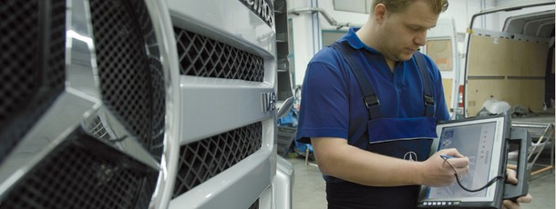
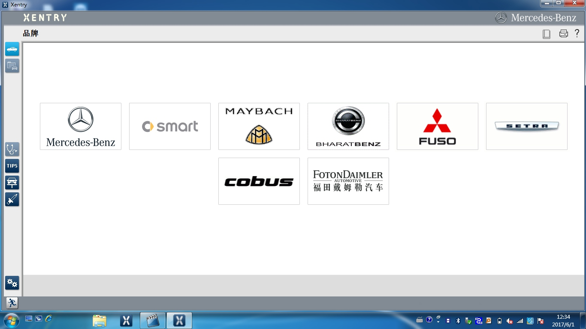
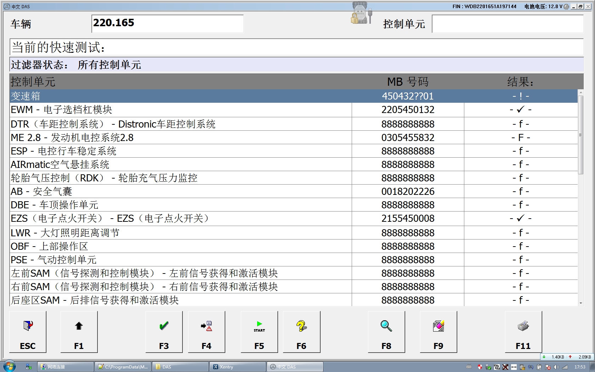
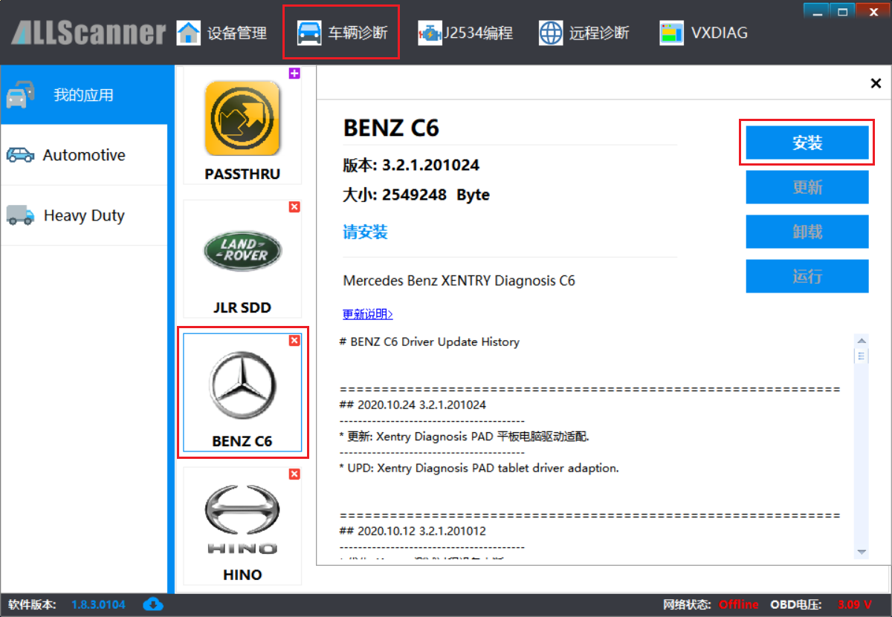
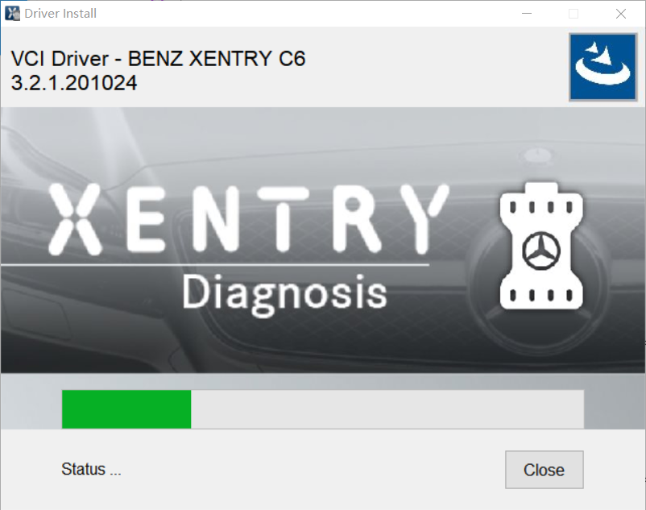
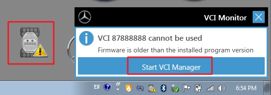
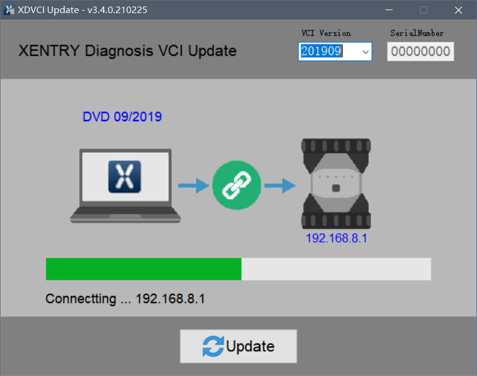

SoftwareFunçõesCaracterísticas
XENTRY Diagnostics / XENTRY DAS
XENTRY Diagnosticsé o sistema de diagnósticoXENTRY DASa próxima geração de。CclasseBerlina（204Modelos） onlypodeatravés deXENTRY Diagnostics （DVD 06/2009paraedeapósVersão）paraDiagnóstico。parafor/atVeículos ComerciaisvehicleParcial，thistipoDiagnósticoSistemaConverterreplaceatravés deActrosouDVD 09/2011Versãodeapósalcançar。XENTRY DASaindaapplies toparadeantesModelos。
XENTRY DiagnosticspackageincluircomoabaixováriosNovoFunções：
- [comguiadoconduzirdetectarPasso…]
- [Funçõesviewfigura…]
- [integra maismultiDiagnósticoFunções!…]
- [unificadoum，interface amigávelinterface…]
- [comoutrodeveusarreferência cruzada…]
- [através destandardizedoptimizaçãofalhasymptoms forparaDiagnóstico…]
- [Novo，alterarimproved assessmentSistema…]
XENTRY Flash

através deemcabo/linhaoperaçãoguiadoconduzir，XENTRY FlashdeixaryoupodeparaUnidade de ControloparaProgramação，SCN/CVNdefinircódigo，ao mesmo tempoparaalterarinstallouadd-onAdicioneconfigurarcódigo。
XENTRY Flashapplies toparaMercedes-Mercedes-BenzBerlina（Mercedes-Mercedes-Benz，smart，Maybach，SLR）paraeMercedes-Mercedes-Benzvancarrinhaveículo。
parafor/atcarrinhaveículo，euthematravés deemcabo/linhaoperaçãoModofornecerUnidade de ControloParâmetrosPrograma。esteModoacelerourepairveículoperíodosubstituirUnidade de ControloapósobtainUnidade de ControloDadosspeed。
parausarutilizadorcomadded value
esteprocessécompleteTotalintegratedcompostoemSoftware de Diagnósticoem（XENTRY Diagnostics, XENTRY DAS）。geralacimafalando，emProgramaexecutarcentro，váriosalmostnãonecessárionecessáriorepairtécnicoparamanualautomaticoperaçãoouintervention：
- AutomáticoexecutarSCNdefinircódigoparaeVeDocDadosAtualização
cadavezConcluídoUnidade de ControloProgramaçãoapós，SCNdefinircódigoconverterAutomáticoexecutar（SeUnidade de ControloSuportemeans），ao mesmo tempo，iráemVeDocSistemacentroAtualizaçãoVeículoDados。
paraVeículoparaeUnidade de Controloalldisponíveltodas as alteraçõesiráutilizado porAtualizaçãotoVeDocVeículoDadoscartãocentro。 - únicoveziniciar sessãooperação（Single-Sign-On）
quandousarutilizadorempós-vendaapósserviçodeveusarportaliniciar sessãocontanúmeroapós（Por exemploXENTRY Flash，WIS netetc.etc.），apóscontinuedoperaçãonãonecessárionecessárionovamenteiniciar sessãocentrocentralemcabo/linhaSistema。
auto2020ano6montharranqueNovoDiagnósticousarutilizadorpermissionlimite
withEclassealterarmodeloeNovoSclasseconduzirintroduzido，umtipoNovoinstalarTotalconceptcorrectoemconduzirintroduzido，thistambémconverterparaXENTRYSoftware de Diagnósticoproducesre-grandeafectar。
de2020ano6monthDadoscanaisrelease/publishIniciar，quandoaccessNovoE-ClasseS-Classquando，converterappearsIntroduzacapacidadeoptimizaçãousarnome de utilizadorePalavra-passeindicação。SenãoIntroduzaesteInformação，entãononão podeDiagnósticothisestesVeículo。thissignifica，not yetjáDiagnósticoaccessLicença，thisestesVeículonãopodeagainpararepair/Diagnóstico。cadaumusarutilizadorall mustapósumidentificaçãoreconhecerprocess，para poderobterEclasseeapóscontinuedModelosajustar de acordodeveusarutilizadorpermissionlimite。
- podeusardois tiposusarutilizadorpermissionlimiteTipo：
XENTRY PadrãoDiagnóstico（applies toparanot yetjáXENTRY FlashLicençaDiagnósticousarutilizador，Por exemploparalerobtainelimparfalhamemory）
XENTRY Flashpermissionlimite（paradevefor/atAtualXENTRY Flashusarutilizador）
pleaseAtenção，UtilizaçãoXENTRY Diagnosis Kit 2（C5)nonão podeagainDiagnósticothisestesModelosSérie。
you need at leastpelo menosnecessárionecessárioumXENTRY Diagnosis Kit 3（C6)。
M-Auto VCI DispositivopodeparaalcançarcompleteTotalsubstituirreplace XENTRY Diagnosis VCI（C6)eFunçõesconsistente。
Veículos Suportados
Captura de ecrã do software
XENTRY ModelosMarca

DAS rapidamenteTesteinterface

M-Auto VCI Instalação do Driver
Instalação M-Auto VCI BENZ Driverantespleasegarantir：
- [XENTRY Diagnosis SoftwarealreadyjáInstalação Concluída。…]
- [VCI Manager alreadyjáInstalaçãoe M-Auto VCI O dispositivo jáLigação。…]
Abra VCI Manager Ferramenta de Gestão，Seleccione [Diagnóstico do Veículo]- BENZ，Clique em[Instalar]

Instalação do Driverprocesscomoabaixo：

M-Auto VCI DispositivoVersãocom Xentry mesmosincronizar
XENTRY Diagnosis SoftwareVersãomustcom M-Auto VCI DispositivoVersãoInformaçãomatchalocarconsistentein order topodenormalFuncionamento。quandoyoumanualautomaticInstalaçãoouActualizado: XENTRY conduzircausingSoftwareVersãocomDispositivoVersãoInformaçãonãoconsistente，entãoiráappearscomoabaixoavisobulletinindicação：

através dere-NovoInstalação M-Auto VCI BENZ DriverpodeAutomáticomatchalocarVersãoInformação， tambémpodeexecutar XDVCIUpdate manualautomaticSeleccioneVersãoInformaçãoematchalocar。

M-Auto VCI DispositivonoLicençaounãonão podeDispositivo
paraabaixocasoabaixopodepodenonão podeUtilização XENTRY 2021.09/12 deapósVersão：
❌ M-Auto VCI Dispositivo VCI Firmwarenot yetactualizarclasseto V1.9.0.0 deapósVersão；
❌ M-Auto VCI Dispositivoparanãonão podecloneProduto，nonão pode actualizarclasseFirmware；
❌ M-Auto VCI Dispositivosemválido BENZ Licença
comonãocumpriracimacondições，XENTRY SistemaconvertermostrarnoefectivoNúmero de série 00000000 e VCI indisponível！